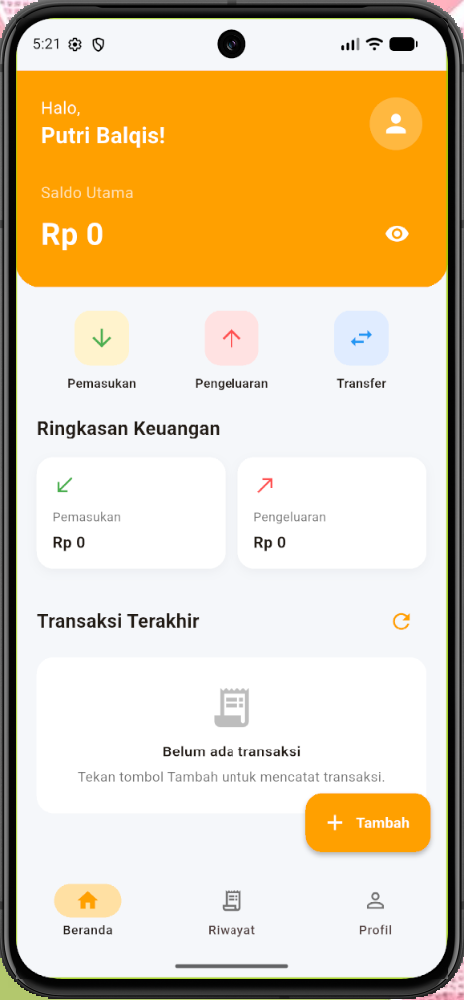
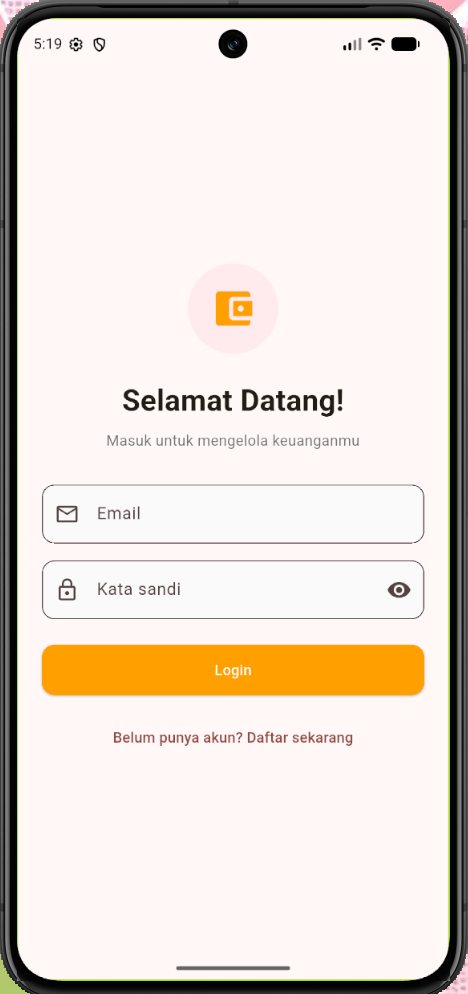
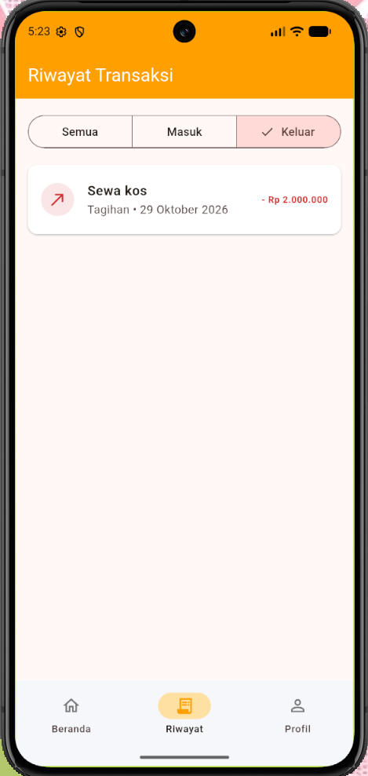

Laporan Akhir AppMobile — Expense Tracker
I. Tujuan Praktikum
- Menggabungkan materi Praktikum 1 sampai Praktikum 5 ke dalam aplikasi Expense Tracker berbasis Flutter.
- Menerapkan widget dan antarmuka untuk menampilkan dashboard, formulir, daftar transaksi, serta detail transaksi.
- Menerapkan validasi input, navigasi antarhalaman, dan passing data.
- Menyimpan serta mengelola data akun dan transaksi menggunakan database lokal SQLite melalui sqflite.
- Membangun aplikasi pencatatan pemasukan dan pengeluaran dengan tampilan yang mudah digunakan.
II. Dasar Teori
Project akhir ini merupakan aplikasi Expense Tracker yang dikembangkan menggunakan Flutter. Aplikasi membantu pengguna mencatat pemasukan dan pengeluaran, melihat ringkasan keuangan, serta memeriksa detail transaksi.
Flutter menggunakan pendekatan berbasis Widget untuk membangun antarmuka. Widget seperti Scaffold, AppBar, TextFormField, ElevatedButton, Card, dan ListView digunakan untuk menyusun halaman dan menerima interaksi pengguna.
Formulir login, registrasi, dan penambahan transaksi menggunakan Form, GlobalKey<FormState>, controller, dan validator. Validasi memastikan input memenuhi ketentuan sebelum diproses.
Navigasi dikelola menggunakan Navigator dan named route. Data halaman tujuan dikirim melalui arguments atau constructor. Data pengguna dan transaksi dikelola secara lokal menggunakan SQLite melalui package sqflite.
III. Langkah-Langkah Praktikum
- Menyiapkan Struktur Project
Project dipisahkan menjadi beberapa bagian, seperti halaman aplikasi, model, database, dan widget pendukung agar setiap file memiliki tanggung jawab yang jelas.lib/ ├── main.dart ├── database/ │ └── app_database.dart ├── models/ │ ├── app_user.dart │ └── transaction_model.dart ├── screens/ │ ├── login_screen.dart │ ├── register_screen.dart │ ├── dashboard_screen.dart │ ├── add_transaction_screen.dart │ └── transaction_detail_screen.dart └── widgets/ ├── formatters.dart └── transaction_tile.dartNama dan susunan file mengikuti struktur project akhir yang digunakan.
- Membuat Dashboard
Dashboard menampilkan saldo, menu pemasukan dan pengeluaran, ringkasan keuangan, serta transaksi terbaru. Tombol tambah membuka formulir transaksi.Scaffold( backgroundColor: const Color(0xFFF5F7FA), floatingActionButton: FloatingActionButton.extended( onPressed: _openAddForm, backgroundColor: const Color(0xFFFFA000), foregroundColor: Colors.white, icon: const Icon(Icons.add), label: const Text('Tambah'), ), )Warna kuning keemasan menjadi aksen utama, dengan latar abu-abu muda dan kartu putih.

- Membuat Login dan Registrasi
Login menerima email dan kata sandi. Registrasi menerima nama lengkap, email, kata sandi, dan konfirmasi kata sandi. Validator memeriksa input sebelum data diproses.if (!_formKey.currentState!.validate()) return; setState(() => _loading = true); // Proses login atau registrasi
Status loading digunakan sebagai umpan balik ketika proses berlangsung.

- Membuat Form Tambah Transaksi
Form menerima nama transaksi, nominal, jenis, kategori, tanggal, dan catatan opsional. Kategori menyesuaikan jenis transaksi dan tanggal dipilih melalui kalender.final selected = await showDatePicker( context: context, initialDate: _selectedDate, firstDate: DateTime(2000), lastDate: DateTime.now().add( const Duration(days: 365), ), ); if (selected != null) { setState(() => _selectedDate = selected); }Nominal divalidasi agar berupa bilangan bulat lebih besar dari nol.

- Menerapkan Navigasi dan Detail Transaksi
Pengguna memilih transaksi dari daftar untuk membuka detail. Informasi transaksi ditampilkan pada halaman detail, yang juga menyediakan aksi hapus setelah konfirmasi.await Navigator.pushNamed( context, '/detail', arguments: transaction, ); await _loadTransactions();

- Menghubungkan Aplikasi dengan SQLite
Database lokal dikelola melalui AppDatabase. Data akun digunakan untuk login dan registrasi, sedangkan data transaksi menyimpan pengguna, judul, nominal, jenis, kategori, tanggal, dan catatan.await AppDatabase.instance.insertTransaction( TransactionModel( userId: widget.userId, title: _titleController.text.trim(), amount: amount, type: _type, category: _category, date: _selectedDate, note: _noteController.text.trim(), ), );
IV. Tugas Praktikum
Tugas akhir menggabungkan materi Praktikum 1 sampai Praktikum 5 ke dalam satu aplikasi pencatatan keuangan. Alur penggunaan meliputi registrasi atau login, membuka dashboard, menambah transaksi, melihat detail transaksi, dan menghapus transaksi.
- Menguji Registrasi dan Login
Memasukkan data akun dan memastikan validasi serta pesan kesalahan ditampilkan ketika input tidak sesuai atau email sudah terdaftar. - Menguji Validasi Transaksi
Menguji input kosong, nominal bukan angka, nominal nol atau negatif, serta input valid. - Menguji Penyimpanan Data
Memastikan transaksi yang disimpan muncul kembali pada dashboard dan memengaruhi ringkasan pemasukan, pengeluaran, serta saldo. - Menguji Detail dan Penghapusan
Memastikan detail sesuai dengan transaksi yang dipilih dan penghapusan hanya dilakukan setelah konfirmasi. - Menyiapkan Dokumentasi dan Deployment
Screenshot aplikasi akhir dapat ditempatkan di folder images sesuai nama file pada kode. Build dan deployment web dilakukan mengikuti layanan hosting yang digunakan.
V. Hasil dan Pembahasan
Project akhir Expense Tracker menggabungkan komponen antarmuka Flutter, pengelolaan form, validasi input, navigasi, passing data, dan penyimpanan data lokal. Kode dipisahkan ke dalam file halaman, model, widget, serta pengelola database.
Dashboard menampilkan saldo dari selisih pemasukan dan pengeluaran, ringkasan keuangan, serta daftar transaksi terbaru. Form transaksi memungkinkan pengguna menentukan jenis, kategori, tanggal, nominal, dan catatan. Halaman detail menampilkan informasi transaksi terpilih dan menyediakan fungsi penghapusan dengan konfirmasi.
Form login dan registrasi menerapkan validasi sebelum data diproses. SQLite melalui sqflite digunakan untuk mengelola data akun dan transaksi. Setelah operasi data selesai, tampilan dimuat ulang agar informasi sesuai dengan data terbaru.
Tampilan aplikasi menggunakan kuning keemasan sebagai aksen utama, latar abu-abu muda, dan kartu putih. Warna hijau untuk pemasukan dan merah untuk pengeluaran dipertahankan sebagai pembeda visual. Pengujian pada target platform perlu dilakukan sebelum aplikasi dipublikasikan.
VI. Kesimpulan
Berdasarkan pengembangan project akhir, Flutter dapat digunakan untuk membangun aplikasi pencatatan keuangan dengan antarmuka yang terstruktur dan interaktif. Pemisahan halaman, model, widget, dan pengelola database membantu kode lebih mudah dipelihara.
Expense Tracker menyediakan fitur registrasi dan login, dashboard ringkasan keuangan, pencatatan pemasukan dan pengeluaran, detail transaksi, serta penghapusan transaksi. Validasi input membantu memastikan data memenuhi ketentuan sebelum disimpan.
Penggunaan SQLite melalui sqflite memungkinkan data akun dan transaksi dikelola secara lokal. Dengan menggabungkan materi Praktikum 1 sampai Praktikum 5, project ini menerapkan pembuatan antarmuka, pengelolaan input, navigasi, passing data, dan pengolahan data. Aplikasi perlu diuji pada target platform sebelum deployment web.